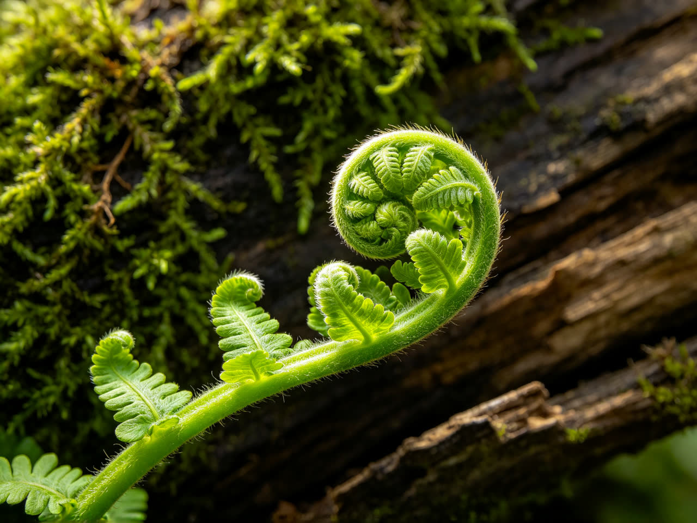
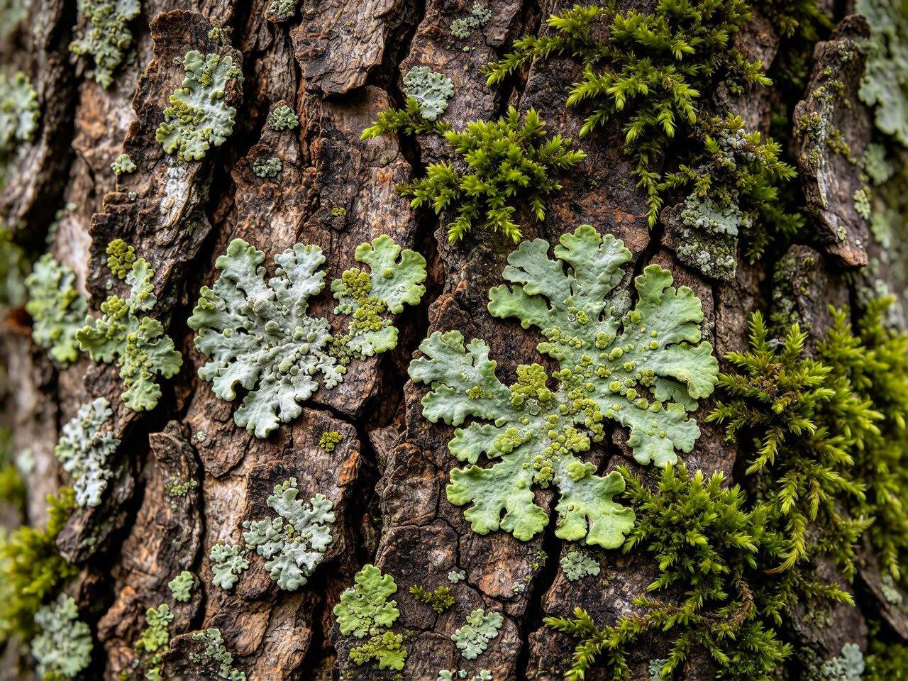
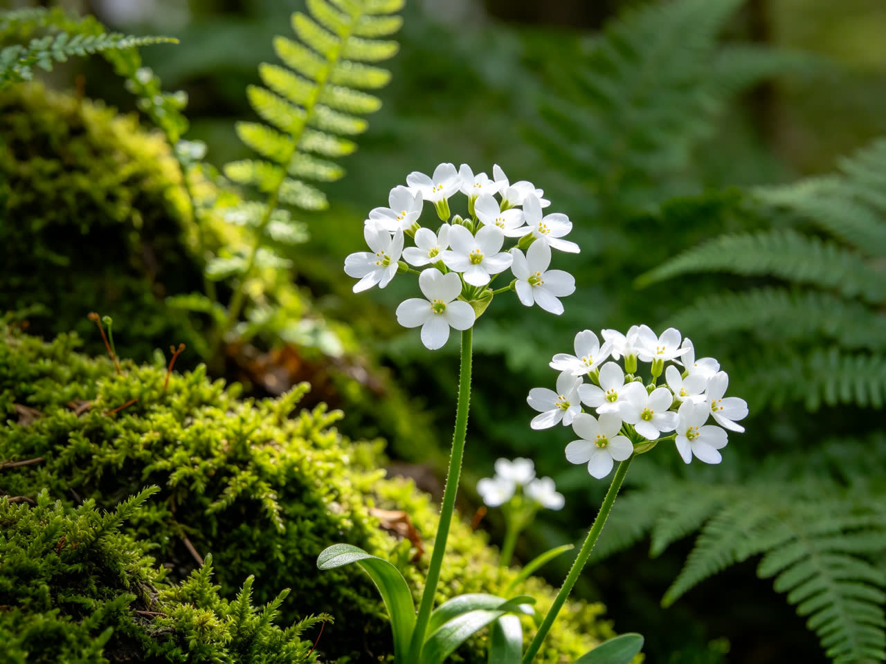

Autumn · Observation 07
After the Rain
We came back before the paths had dried. The moss had lifted two shades greener and every stone held a thin skin of water.
Short observations written between visits, one small change at a time.
We came back before the paths had dried. The moss had lifted two shades greener and every stone held a thin skin of water.

Seven unfurling fronds counted along the creek edge. Marked each stem so the summer count can track how many open fully.

The old ash carries three new lichen patches since last winter. Slow surface life is a quiet measure of cleaner air.

The clearing edge held through the warm weeks. Two new clumps established where bare soil was left unmulched.